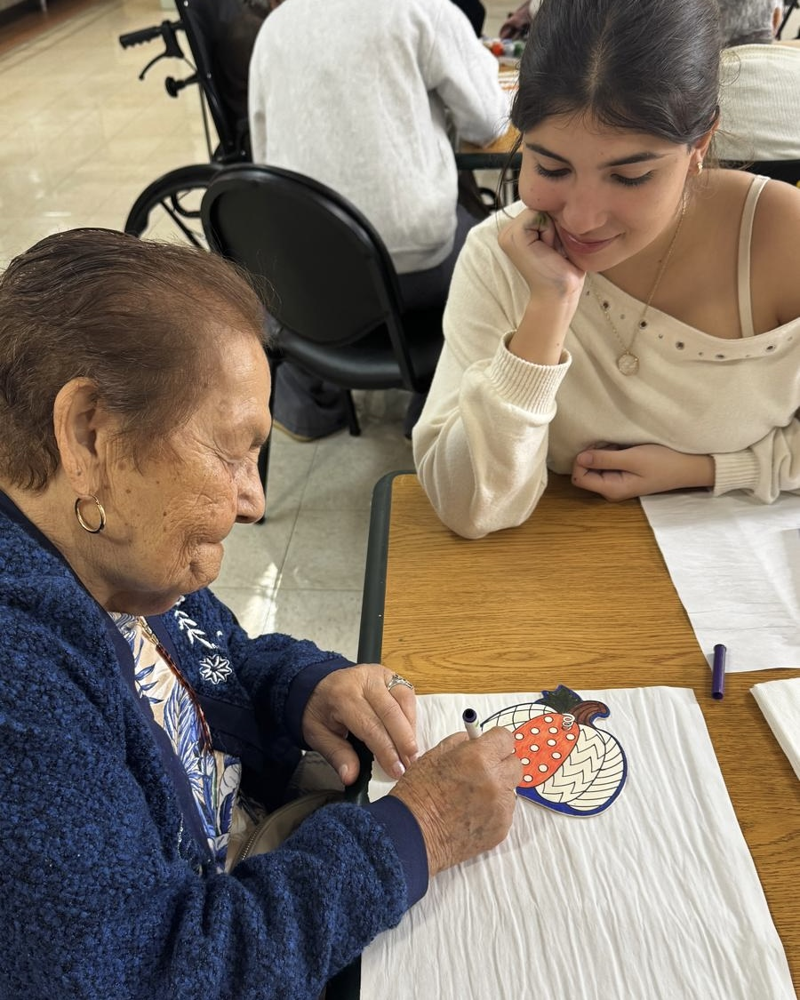
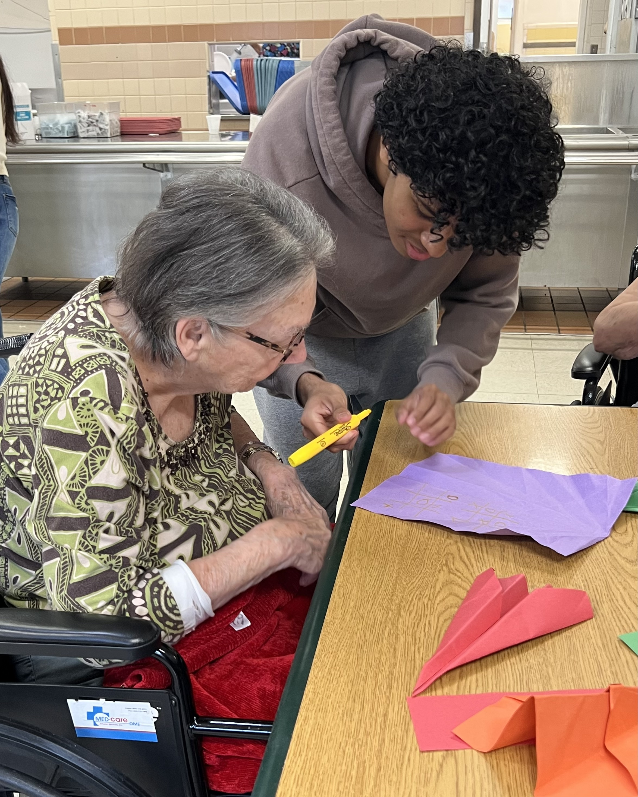

Read more resources
Get started with guides on senior wellbeing, healthy routines, and digital confidence.
Join the mailing list
Learn more
Read our latest insights, program details, and community stories that explain how we create meaningful moments for older adults.
Explore resources
What we offer
From volunteer opportunities to family support programs, our resources help you understand how Elderly Smiles makes senior care more compassionate and dependable.

Featured services
Meaningful social connection helps older adults stay engaged and reduces isolation linked to dementia.
Simple, nourishing meals designed to support brain health, digestion, and energy for seniors.
Accessible movement routines that improve balance, strength, and comfort for every mobility level.
Practical coaching for technology, communication, and self-advocacy that boosts confidence and independence.
Style and grooming guidance that helps older adults feel polished, expressive, and cared for every day.
Recipes
These recipes nourish the body while supporting brain health, energy, strength, digestion, and inflammation balance.
Exercises
Gentle, accessible ideas help older adults stay active, confident, and free.
Professional Curation
Elderly Smiles helps older adults develop practical digital and professional skills for interviews, work, volunteering, and community roles.
Curated Looks
We share accessible grooming and outfit ideas that help older adults feel polished, put together, and expressive every day.
Want more details?
From healthy meals and movement to professional confidence and meaningful connection, we help older adults age with purpose and elegance.
Get started with guides on senior wellbeing, healthy routines, and digital confidence.
Join the mailing listSee how Elderly Smiles supports seniors, families, and volunteers with caring, practical services.
Learn about joiningAsk us how to get involved with chapters, letter writing, activity hosting, or partnership opportunities.
Contact Us